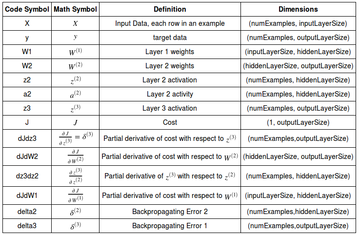
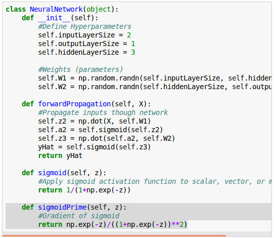
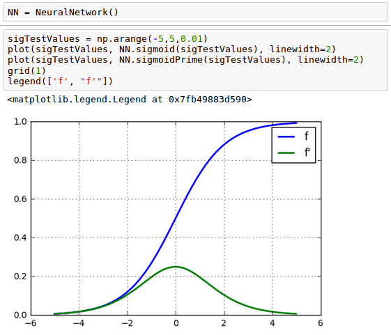
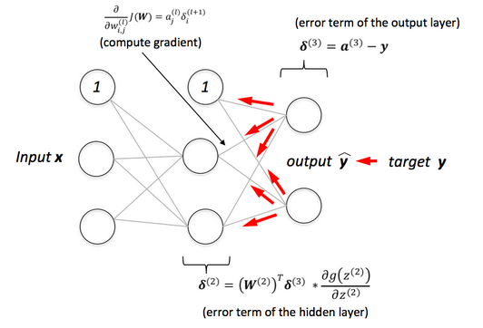
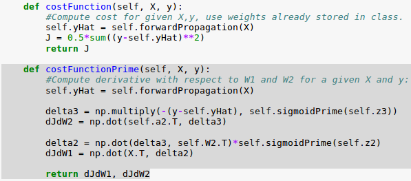
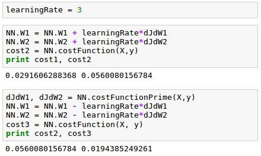
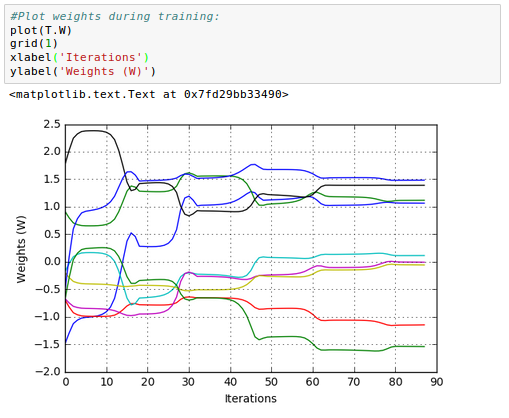

Artificial Neural Network (ANN) 4 - Backpropagation of Errors
Continued from Artificial Neural Network (ANN) 3 - Gradient Descent where we decided to use gradient descent to train our Neural Network.
Backpropagation (Backward propagation of errors) algorithm is used to train artificial neural networks, it can update the weights very efficiently.
Usually, it is used in conjunction with an gradient descent optimization method.
Basically, backpropagation is just a very computationally efficient approach to compute the derivatives of a complex cost function and our goal is to use those derivatives to learn the weight coefficients for parameterizing a multi-layer artificial neural network. The parameterization of neural networks is challenging because we are typically dealing with a very large number of weight coefficients in a high-dimensional feature space.
In other words, the method calculates the gradient ($\frac {\partial J}{\partial W}$) of a cost (loss or objective) function with respect to all the weights in the network, so that the gradient is fed to the gradient descent method which in turn uses it to update the weights in order to minimize the cost function.
Since backpropagation requires a known, target data for each input value in order to calculate the cost function gradient, it is usually used in a supervised networks.
Here is the table for variables used in our neural network:
Table source : Neural Networks Demystified Part 4: Backpropagation
The neurons (nodes) of our model are in two layers: hidden layer and output layer. So, we need to compute two gradients overall: $\frac {\partial J}{\partial W^{(1)}}$ and $\frac {\partial J}{\partial W^{(2)}}$, the gradient with respect to the weight for hidden layer and the gradient with respect to the weight for output layer, respectively.
To improve our poor model, we first need to find a way of quantifying exactly how wrong (or how god) our predictions are.
One way of doing it is to use a cost function. For a given sample, a cost function tells us how costly our model is.
We'll use sum of square errors, the difference between target (known) data and the value estimated by our network, to compute an overall cost and we'll try to minimize it.
Actually, training a network means minimizing a cost function.
$$ J = \frac {1}{2} \sum_{i=1}^N (y_i-\hat y_i)^2 $$where the $N$ is the number of training samples. Here, the $J$ is the error of the network for a single training iteration.
Note that $\sum$ is required for our batch gradient descent algorithm. If we opted to use stochastic gradient descent, we do not need the $\sum$ unless we want to use mini type of gradient descent method.
As we can see from equation, the cost is a function of two things: our sample data and the weights on our synapses. Since we don't have much control of our data, we'll try to minimize our cost by changing the weights.
Our weights, $W$, are spread across two matrices, $W^{(1)}$ and $W^{(2)}$.
We have a collection of 9 weights:
$$ W^{(1)} = \begin{bmatrix} W_{11}^{(1)} & W_{12}^{(1)} & W_{13}^{(1)} \\ W_{21}^{(1)} & W_{22}^{(1)} & W_{23}^{(1)} \end{bmatrix} $$ $$ W^{(2)} = \begin{bmatrix} W_{11}^{(2)} \\ W_{21}^{(2)} \\ W_{31}^{(2)} \end{bmatrix} $$
Here are the equations for our neural network:
$$ \begin{align}z^{(2)} = XW^{(1)} \tag 1\\ a^{(2)} = f \left( z^{(2)} \right)& \tag 2\\ z^{(3)} = a^{(2)} W^{(2)} \tag 3\\ \hat y = f \left( z^{(3)} \right) \tag 4 \end{align} $$and we're going to make our cost ($J$) as small as possible with an optimal combination of the weights.
As discussed earlier, we decided to use gradient descent to train our Neural Network, so it could make better predictions of our score on a test based on how many hours we slept, and how many hours we studied the night before.
To perform gradient descent, we need an equation and some code for our gradient, $\frac{dJ}{dW}$.
We'll separate our $\frac{dJ}{dW}$ computation by computing $\frac {\partial J}{\partial W^{(1)}}$ and $\frac {\partial J}{\partial W^{(2)}}$ independently.
Let's work on $\frac {\partial J}{\partial W^{(2)}}$ first, which is for the output layer.
The sum in our cost function adds the error from each sample to create our overall cost. We'll take advantage of the sum rule in differentiation, which says that the derivative of the sums equals the sum of the derivatives. We can move our $\sum$ outside and just worry about the derivative of the inside expression first:
$$ \frac {\partial J}{\partial W^{(2)}} = \frac {\partial \left( \sum \frac {1}{2}(y-\hat y)^2 \right)} {\partial W^{(2)}} $$ $$ = \sum \frac {\partial \left( \frac {1}{2}(y-\hat y)^2 \right)} {\partial W^{(2)}} $$Unlike $\hat y$ which depends on $W^{(2)}$, $y$ is constant. So, $\frac {\partial y} {\partial W^{(2)}} = 0 $, and we have the following:
$$ \frac {\partial J}{\partial W^{(2)}} = - \sum (y-\hat y) \frac {\partial \hat y} {\partial W^{(2)}} $$We now need to think about the derivative of $\frac {\partial \hat y} {\partial W^{(2)}}$.
From Eq.4:
$$\hat y = f \left( z^{(3)} \right) \tag 4 $$we know that $\hat y$ is our activation function of $z^{(3)}$, so we may want to apply the chain rule again to break $\frac {\partial \hat y}{\partial W^{(2)}}$ into $\frac {\partial \hat y}{\partial z^{(3)}}$ times $ \frac {\partial z^{(3)}}{\partial W^{(2)}}$:
$$ \frac {\partial J}{\partial W^{(2)}} = - \sum (y-\hat y) \frac {\partial \hat y}{\partial z^{(3)}} \frac {\partial z^{(3)}}{\partial W^{(2)}} $$To keep things simple, we'll drop our summation. Once we've computed $\frac {\partial J}{\partial W}$ for a single sample, we'll add up all our individual derivative terms.
To find the rate of change of $\hat y$ with respect to $z^{(3)}$, we need to differentiate our sigmoid activation function with respect to $z$:
$$ f(z) = \frac {1}{1+e^{-z}}$$ $$ f^\prime(z) = \frac {e^{-z}} {(1+e^{-z})^2}$$Here is the our neural network class including the definition of the sigmoid prime ($f^\prime(z)$):
The plot should look like this:
Let's continue to work on our equation. We can now replace $\frac {\partial \hat y}{\partial z^{(3)}}$ with $f^\prime(z^{(3)})$ since $\hat y = f \left( z^{(3)} \right)$:
$$ \frac {\partial J}{\partial W^{(2)}} = - (y-\hat y) \frac {\partial \hat y}{\partial z^{(3)}} \frac {\partial z^{(3)}}{\partial W^{(2)}} $$ $$ = - (y-\hat y) f^\prime(z^{(3)}) \frac {\partial z^{(3)}}{\partial W^{(2)}} \tag 5$$Our final piece of the puzzle is $\frac {\partial z^{(3)}}{\partial W^{(2)}}$ which represents the change of $z$, our third layer activity, with respect to the weights in the second layer.
$z^{(3)}$ is the matrix product of our activities, $a^{(2)}$ and our weights, $W^{(2)}$. The activities from layer (2) are multiplied by their corresponding weights and added together to yield $z^{(3)}$.
If we focus on a single synapse for a moment, we see a simple linear relationship between $W$ and $z$, where $a$ is the slope.
So for each synapse, $\frac {\partial z^{(3)}}{\partial W^{(2)}}$ is just the activation, $a$ on that synapse:
$$ z^{(3)} = a^{(2)} W^{(2)} \tag 3 $$Another way to think about what the Eq.3 is doing here is that it is backpropagating the error to each weight, by multiplying the activity on each synapses:
$$ z^{(3)} = a_1^{(2)}W_{11}^{(2)} + a_2^{(2)}W_{21}^{(2)} + a_3^{(2)}W_{31}^{(2)} $$The weights that contribute more to the error will have larger activations, and yield larger $ \frac {\partial J}{\partial W^{(2)}}$ values, and those weights will be changed more when we perform gradient descent.
Let's take a closer look at the Eq.5:
$$ \frac {\partial J}{\partial W^{(2)}} = - (y-\hat y) f^\prime(z^{(3)}) \frac {\partial z^{(3)}}{\partial W^{(2)}} $$ $$ = \delta^{(3)} \frac {\partial z^{(3)}}{\partial W^{(2)}} $$Note that here the $\delta^{(3)}$ is defined as:
$$ \delta^{(3)} = - (y-\hat y) f^\prime(z^{(3)}) \tag 6 $$The 1st part of our equation, $(y-\hat y)$ is of the same dimension as our output data, $3 \times 1$ matrix. The 2nd part of our equation, $f^\prime(z^{(3)})$ is of the same size, $3 \times 1$ matrix. So, our first operation becomes a scalar multiplication.
Our resulting 3 by 1 matrix is referred to as the backpropagating error, $\delta ^{(3)}$:
$$ \delta^{(3)} = \begin{bmatrix} \delta_1^{(3)} \\ \delta_2^{(3)} \\ \delta_3^{(3)} \end{bmatrix} = \begin{bmatrix} y_1 - \hat y_1 \\ y_2 - \hat y_2 \\ y_3 - \hat y_3 \end{bmatrix} \cdot \begin{bmatrix} f^\prime(z_1^{(3)}) \\ f^\prime(z_2^{(3)}) \\ f^\prime(z_3^{(3)}) \end{bmatrix} $$We know that $\frac{\partial z^{(3)}}{\partial W^{(2)}}$ is equal to the activity of each synapse:
$$ \frac {\partial z^{(3)}}{\partial W^{(2)}} = \begin{bmatrix} a_{11}^{(2)} & a_{12}^{(2)} & a_{13}^{(2)}\\ a_{21}^{(2)} & a_{22}^{(2)} & a_{23}^{(2)}\\ a_{31}^{(2)} & a_{32}^{(2)} & a_{33}^{(2)} \end{bmatrix} $$Each value in $\delta^{(3)}$ needs to be multiplied by each activity. We can achieve this by transposing $a^{(2)}$ and matrix multiplying by $\delta^{(3)}$:
$$ \frac {\partial J}{\partial W^{(2)}} = \left( a^{(2)} \right)^T \delta^{(3)} \tag 8 $$ $$ \frac {\partial J}{\partial W^{(2)}} = \begin{bmatrix} a_{11}^{(2)} & a_{21}^{(2)} & a_{31}^{(2)}\\ a_{12}^{(2)} & a_{22}^{(2)} & a_{32}^{(2)}\\ a_{13}^{(2)} & a_{23}^{(2)} & a_{33}^{(2)} \end{bmatrix} \begin{bmatrix} \color{purple}{\delta_1^{(3)}} \\ \color{purple}{\delta_2^{(3)}} \\ \color{purple}{\delta_3^{(3)}} \end{bmatrix} $$ $$ = \begin{bmatrix} a_{11}^{(2)} \color{purple}{\delta_1^{(3)}} & a_{21}^{(2)} \color{purple}{\delta_2^{(3)}} & a_{31}^{(2)} \color{purple}{\delta_3^{(3)}}\\ a_{12}^{(2)} \color{purple}{\delta_1^{(3)}} & a_{22}^{(2)} \color{purple}{\delta_2^{(3)}} & a_{32}^{(2)} \color{purple}{\delta_3^{(3)}}\\ a_{13}^{(2)} \color{purple}{\delta_1^{(3)}} & a_{23}^{(2)} \color{purple}{\delta_2^{(3)}} & a_{33}^{(2)} \color{purple}{\delta_3^{(3)}} \end{bmatrix} $$So far, we calculated $ \frac {\partial J}{\partial W^{(\color{red}{2})}} $ for output layer.
Now, we have one final term to compute: $ \frac {\partial J}{\partial W^{(\color{red}{1})}} $.
$$ \frac {\partial J}{\partial W^{(1)}} = - (y-\hat y) \frac {\partial \hat y}{\partial z^{(3)}} \frac {\partial z^{(3)}}{\partial W^{(1)}} $$ $$ = - (y-\hat y) f^\prime(z^{(3)}) \frac {\partial z^{(3)}}{\partial W^{(1)}} $$ $$ = \delta^{(3)} \frac {\partial z^{(3)}}{\partial W^{(1)}} \tag 7 $$where the backpropagating error, $\delta^{(3)}$ is given as:
$$ \delta^{(3)} = - (y-\hat y) \frac {\partial \hat y}{\partial z^{(3)}} $$
We now take the derivative across our synapses. Let's compute the derivative with respect to the weights on our synapses:
$$ \frac {\partial z^{(3)}}{\partial W^{(1)}} = \frac {\partial z^{(3)}}{\partial a^{(2)}} \frac {\partial a^{(2)}}{\partial W^{(1)}} $$The Eq.8 can be written as the following:
$$ \frac {\partial J}{\partial W^{(1)}} = \delta^{(3)} \frac {\partial z^{(3)}}{\partial W^{(1)}} $$ $$ = \delta^{(3)} \frac {\partial z^{(3)}}{\partial a^{(2)}} \frac {\partial a^{(2)}}{\partial W^{(1)}} $$Though there's still a nice linear relationship along each synapse, now we're interested in the rate of change of $z^{(3)}$ with respect to $a^{(2)}$. From the Eq.3, we can see the slope is just equal to the weight value for that synapse.
$$ z^{(3)} = a^{(2)} W^{(2)} \tag 3 $$We can achieve this mathematically by multiplying by $ \left ( W^{(2)} \right )^T $ transpose.
$$ \frac {\partial J}{\partial W^{(1)}} = \delta^{(3)} \left ( W^{(2)} \right )^T \frac {\partial a^{(2)}}{\partial W^{(1)}} $$ $$ = \delta^{(3)} \left ( W^{(2)} \right )^T \frac {\partial a^{(2)}}{\partial z^{(2)}} \frac {\partial z^{(2)}}{\partial W^{(1)}} $$ $$ = \delta^{(3)} \left ( W^{(2)} \right )^T f^\prime \left ( z^{(2)} \right) \frac {\partial z^{(2)}}{\partial W^{(1)}} \tag 9 $$For the substitution in the last line of Eq.9, we used the following Eq.2:
$$ a^{(2)} = f \left( z^{(2)} \right) \tag 2 $$One more computation left, the last term in Eq.9: $\frac {\partial z^{(2)}} {\partial W^{(1)}}$.
There is a simple linear relationship on the synapses between $z^{(2)}$ and $W^{(1)}$ (Eq.1):
$$ z^{(2)} = XW^{(1)} \tag 1 $$In this case though, the slope is the input value, $X$. We can use the same technique as last time by multiplying by $X$ transpose, $X^T$ effectively applying the derivative and adding our $ \frac {\partial J}{\partial W^{(1)}}$'s together across all our examples.
$$ \frac {\partial J}{\partial W^{(1)}} = X^T \delta^{(3)} \left ( W^{(2)} \right )^T f^\prime \left ( z^{(2)} \right) $$ $$ = X^T \delta^{(2)} \tag {10} $$where
$$ \delta^{(2)} = \delta^{(3)} \left ( W^{(2)} \right )^T f^\prime \left ( z^{(2)} \right) \tag {11} $$
picture source: Python Machine Learning - Sebastian Raschka
Here is the code for the cost function primes, $ \frac {\partial J}{\partial W^{(1)}} $ and $ \frac {\partial J}{\partial W^{(2)}} $. We'll use the backpropagation errors ($\delta^{(2)}$ and $\delta^{(3)}$) we computed in the previous section:

In the code, we use the following for $ \frac {\partial J}{\partial W^{(2)}} $.
$$ \frac {\partial J}{\partial W^{(2)}} = \left( a^{(2)} \right)^T \delta^{(3)} \tag 8 $$where
$$ \delta^{(3)} = - (y-\hat y) f^\prime(z^{(3)}) \tag 6 $$For $ \frac {\partial J}{\partial W^{(1)}} $ we used:
$$ \frac {\partial J}{\partial W^{(1)}} = X^T \delta^{(2)} \tag {10} $$where
$$ \delta^{(2)} = \delta^{(3)} \left ( W^{(2)} \right )^T f^\prime \left ( z^{(2)} \right) \tag {11} $$We can now compute $\frac {\partial J}{\partial W}$, which tells us which way is uphill in our 9 dimensional optimization space.

If we move this way by adding a scalar times our derivative to our weights, our cost will increase, and if we do the opposite, subtract our gradient from our weights, we will move downhill and reduce our cost, which is the core of gradient descent and a key part of how learning algorithms are trained.

Here is the plot for the 9 weights on synapses of our neural network:
The code will be available once we've done with scipy's BFGS gradient method and the wrapper for it in 7. Overfitting & Regularization.
Next:
5. Checking gradientMachine Learning with scikit-learn
scikit-learn installation
scikit-learn : Features and feature extraction - iris dataset
scikit-learn : Machine Learning Quick Preview
scikit-learn : Data Preprocessing I - Missing / Categorical data
scikit-learn : Data Preprocessing II - Partitioning a dataset / Feature scaling / Feature Selection / Regularization
scikit-learn : Data Preprocessing III - Dimensionality reduction vis Sequential feature selection / Assessing feature importance via random forests
Data Compression via Dimensionality Reduction I - Principal component analysis (PCA)
scikit-learn : Data Compression via Dimensionality Reduction II - Linear Discriminant Analysis (LDA)
scikit-learn : Data Compression via Dimensionality Reduction III - Nonlinear mappings via kernel principal component (KPCA) analysis
scikit-learn : Logistic Regression, Overfitting & regularization
scikit-learn : Supervised Learning & Unsupervised Learning - e.g. Unsupervised PCA dimensionality reduction with iris dataset
scikit-learn : Unsupervised_Learning - KMeans clustering with iris dataset
scikit-learn : Linearly Separable Data - Linear Model & (Gaussian) radial basis function kernel (RBF kernel)
scikit-learn : Decision Tree Learning I - Entropy, Gini, and Information Gain
scikit-learn : Decision Tree Learning II - Constructing the Decision Tree
scikit-learn : Random Decision Forests Classification
scikit-learn : Support Vector Machines (SVM)
scikit-learn : Support Vector Machines (SVM) II
Flask with Embedded Machine Learning I : Serializing with pickle and DB setup
Flask with Embedded Machine Learning II : Basic Flask App
Flask with Embedded Machine Learning III : Embedding Classifier
Flask with Embedded Machine Learning IV : Deploy
Flask with Embedded Machine Learning V : Updating the classifier
scikit-learn : Sample of a spam comment filter using SVM - classifying a good one or a bad one
Machine learning algorithms and concepts
Batch gradient descent algorithmSingle Layer Neural Network - Perceptron model on the Iris dataset using Heaviside step activation function
Batch gradient descent versus stochastic gradient descent
Single Layer Neural Network - Adaptive Linear Neuron using linear (identity) activation function with batch gradient descent method
Single Layer Neural Network : Adaptive Linear Neuron using linear (identity) activation function with stochastic gradient descent (SGD)
Logistic Regression
VC (Vapnik-Chervonenkis) Dimension and Shatter
Bias-variance tradeoff
Maximum Likelihood Estimation (MLE)
Neural Networks with backpropagation for XOR using one hidden layer
minHash
tf-idf weight
Natural Language Processing (NLP): Sentiment Analysis I (IMDb & bag-of-words)
Natural Language Processing (NLP): Sentiment Analysis II (tokenization, stemming, and stop words)
Natural Language Processing (NLP): Sentiment Analysis III (training & cross validation)
Natural Language Processing (NLP): Sentiment Analysis IV (out-of-core)
Locality-Sensitive Hashing (LSH) using Cosine Distance (Cosine Similarity)
Artificial Neural Networks (ANN)
[Note] Sources are available at Github - Jupyter notebook files1. Introduction
2. Forward Propagation
3. Gradient Descent
4. Backpropagation of Errors
5. Checking gradient
6. Training via BFGS
7. Overfitting & Regularization
8. Deep Learning I : Image Recognition (Image uploading)
9. Deep Learning II : Image Recognition (Image classification)
10 - Deep Learning III : Deep Learning III : Theano, TensorFlow, and Keras
Ph.D. / Golden Gate Ave, San Francisco / Seoul National Univ / Carnegie Mellon / UC Berkeley / DevOps / Deep Learning / Visualization